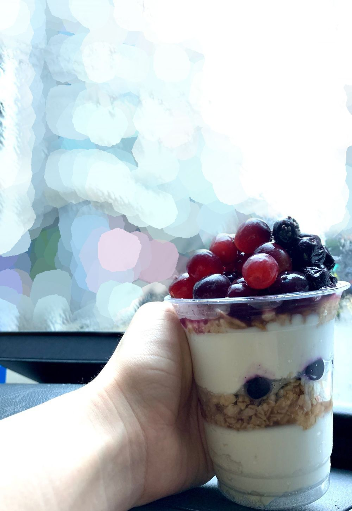

새벽에 마감하는 그릭요거트집이 있어요ㅎㅎ
멤버들이 자주 시키곤 하는데
오늘 처음으로 밥이나 샌드위치, 샐러드, 빵 종류 등등 대신 ~
요거트 먹고 싶다는 생각을 했어요!!
이 요거트로 나의 허한 배가 채워질 까
해서 안 시키던 1人...
이 요거트가 그릭요거트 자체도 상큼한데 ?
토핑인 과일마저
청포도(or 적포도) + 블루베리면
곧 내가 상큼해 터져부릴까 안 시키던
1人.... (귀여운 상큼발랄 요느낌 아님)
그래서 새벽에 부랴부랴 주문을 했죠! 성공🙈
진짜 신나서 사진 찍자마자 ...

포도랑 블루베리를 날렸다
손에 빵꾸 뚫렸나보다
날리고나서
한 3초 멍때림...
지금 내리고 있는 비가
내 마음 속 눈물인 가 봉가
그래도 맛있게 먹었어요ㅋㅋㅋㅋㅋㅋㅋ
개인적으로
이 요거트는
그냥 그래놀라랑 살짝의 꿀이랑만 먹어야 적당히 상콤하고 담백 달달한 듯..
과일까지 같이 먹으면 좀 속이 시더라구요 ㅋㅋㅋㅋㅋㅋㅋ
아이셔 ..
과일은 역시
따로 먹는 게 👍🏻
라고
나를 달래본다